| 日付 | 2021年7月31日（土） - 2021年8月7日（土） | ||||||||
|---|---|---|---|---|---|---|---|---|---|
| 山域 | 東北の山 | ||||||||
| メンバー | 家族（妻、長女・10歳、長男・8歳） | ||||||||
| 山行形態 | 子連れ7泊8日キャンプ | ||||||||
| アクセス | 車、バス | ||||||||
| ルート (Map4) |
|
7日目
旅行の最終日。昨日、岩手山に登ったばかりだが、最後にもう一山登る。
道中、アスピーテラインで眼下には見事な雲海が広がる。
思わず車を停めて景色に見入る。
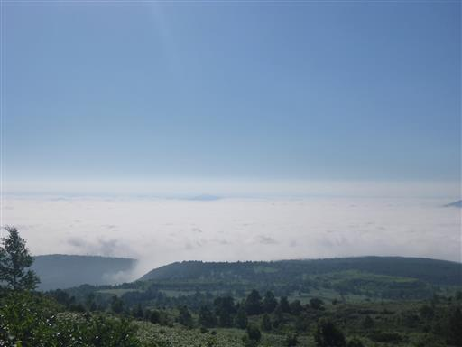
こちらは昨日登った岩手山。
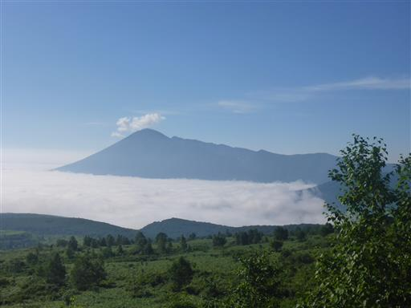
八幡平を過ぎて秋田側に入ったところで再び景色を眺める。
目立つ山は畚岳、右奥に薄ら見えるのは4日前に登った秋田駒ヶ岳だ。
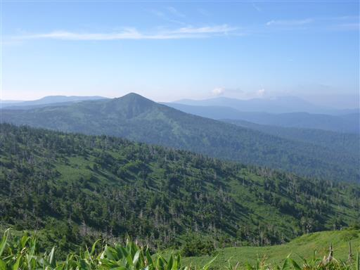
登山口の駐車場に到着。標高990m。
本日の目的地は3日前に登ろうと計画して、急遽計画を変更した秋田焼山。
このまま放置しておけば秋田焼山が浮かばれない。
今日がこんなに晴れるなら、体力的に楽な八幡平を取っておけば良かった。
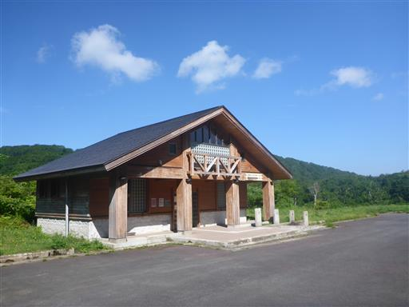
登山口は後生掛温泉。3日前に立ち寄った温泉だ。
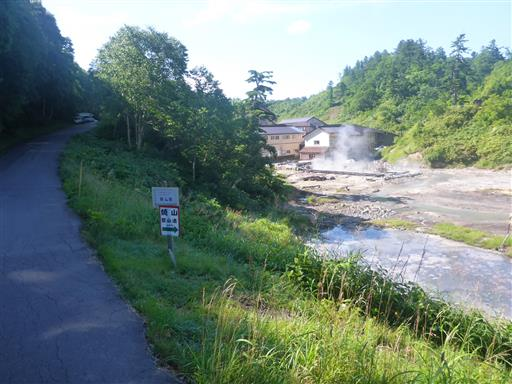
足元に何者かの糞が落ちている。
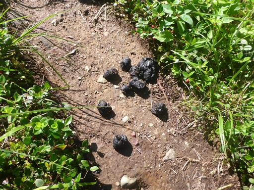
白く濁った川を丸太橋で渡る。
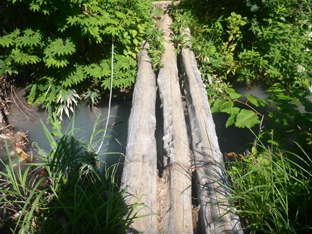
巨大なヒルを発見。
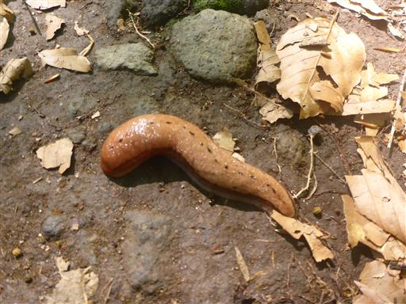
最初は傾斜のほとんどない樹林帯の中を歩いていく。
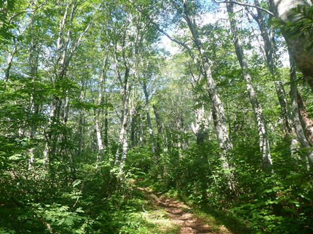
水芭蕉の葉。
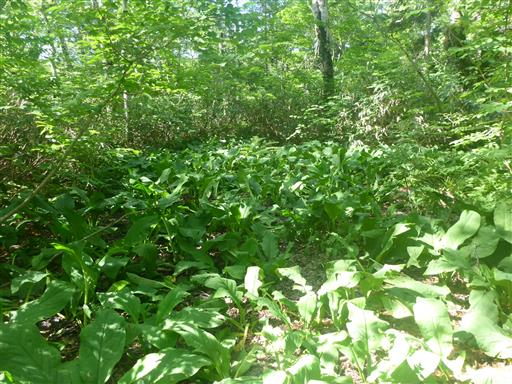
ベコ谷地に到着。
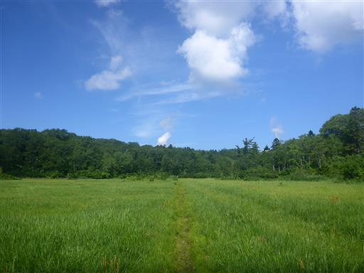
乾燥気味の湿原だが、登山道はぬかるんでいる。
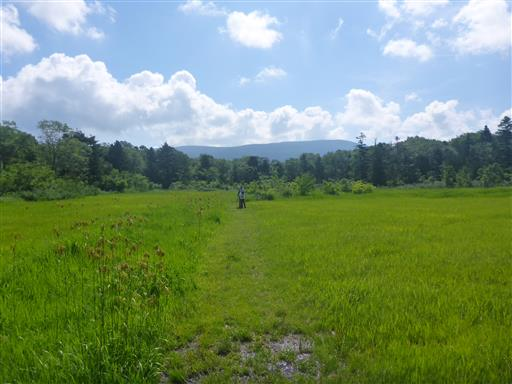
澄川地熱発電所のすぐそばを通り抜ける。
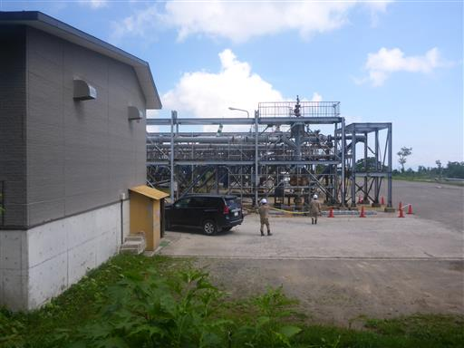
湿原を過ぎると再び樹林帯に。
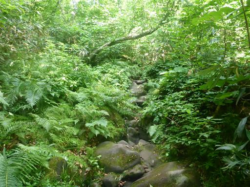
傾斜が緩いためか、地面はぬかるみが多い。
息子が大きな水たまりで渡るのに失敗し、足を完全に水没させてしまう。
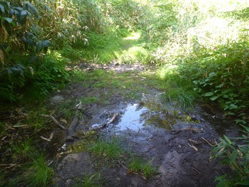
石、ではなく巨大キノコ。
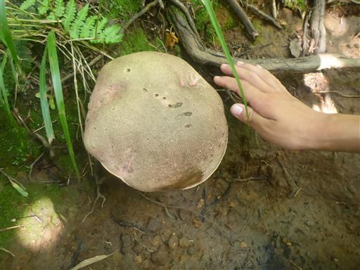
沢沿いに出て来て視界が広がる。
目の前に現れたのは白く染まった荒涼とした風景だ。
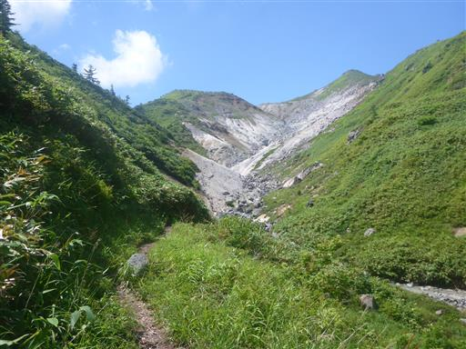
沢沿いに下りてくる。手を浸けて見てびっくり、熱いお湯が流れている。
ここは湯ノ沢と呼ばれているようだ。
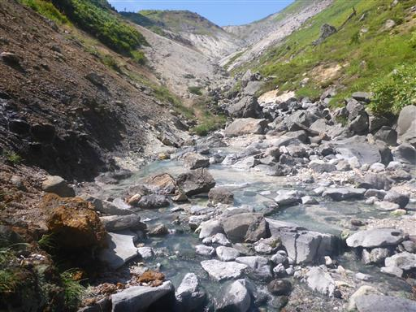
温泉に手を浸ける。40℃くらいでちょうど良い湯加減だ。
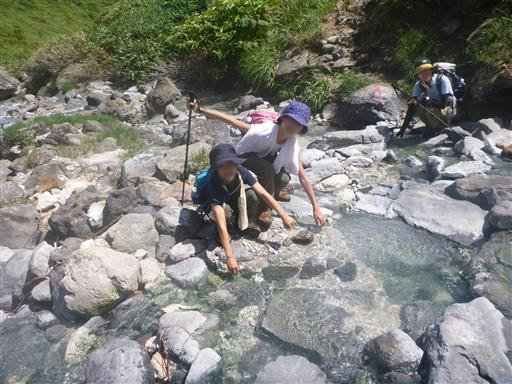
あちらこちら温泉だらけ。
本日も下界は36度予想でとにかく暑く、本当は温泉よりも雪解け水の方が有難いのだが、
熱いお湯が流れてくる川は滅多に無く、貴重な体験だ。
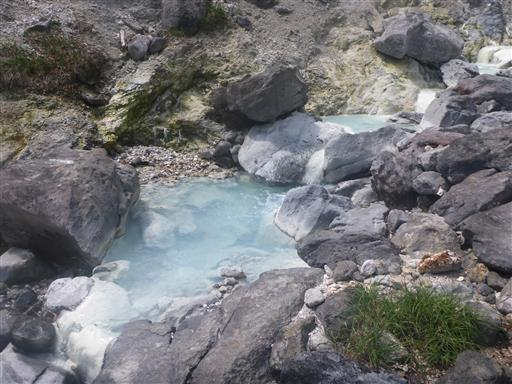
岩だらけの沢を遡上していく。沢沿いの道としても秀逸だ。
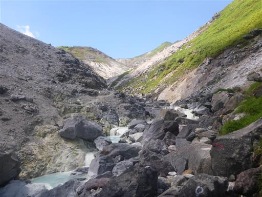
全てが白く染まっている。水の色がきれいだ。
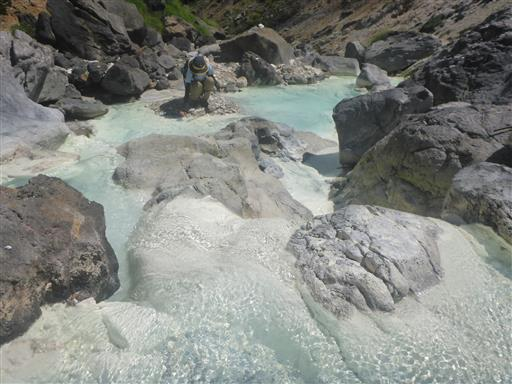
何度か川を渡渉する。
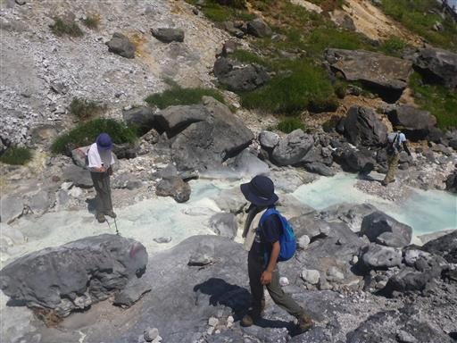
しばらく歩くと沢を離れて、再び緑の道になる。
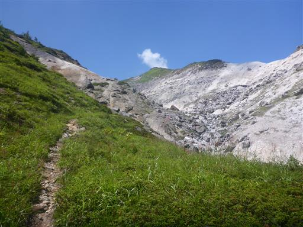
周囲に高い木は無く直射日光が避けられないため、暑くてきつい登りが続く。
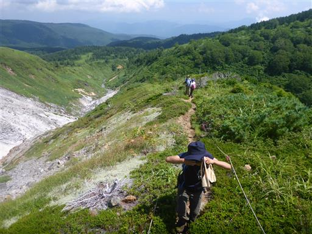
斜面に広がるコケ。

目の前に見えるピークが焼山山頂だと思っていたが、どうやら違うようだ。
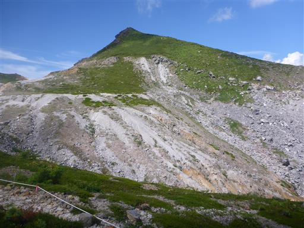
周囲は再び真白な世界になる。
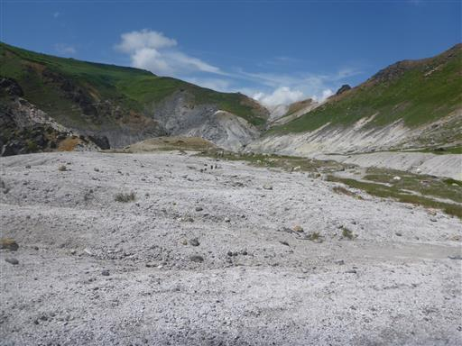
この白い砂を踏みしめて歩いていく。
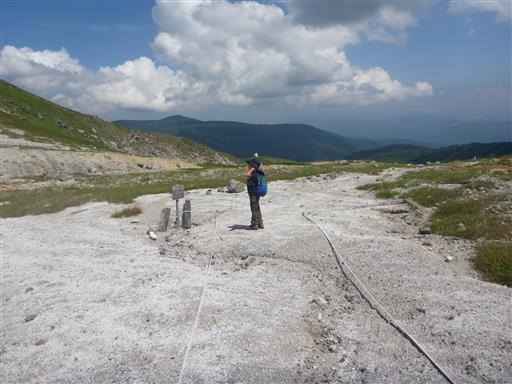
登山道から外れるのは危険なようだ。
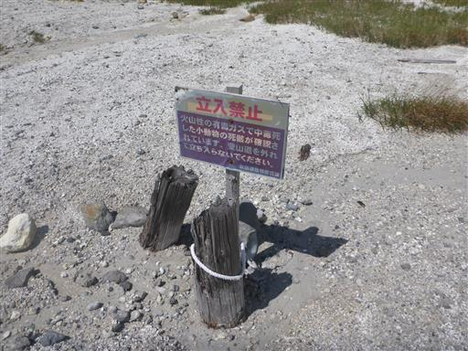
眼下に小さな池が見える。空沼だ。
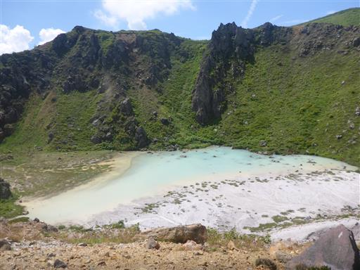
ここから火口縁を歩く。滑り落ちそうで一見怖い道だ。
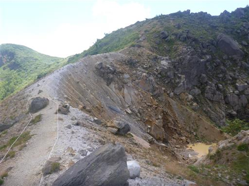
小さな茶色い水たまりが見える。
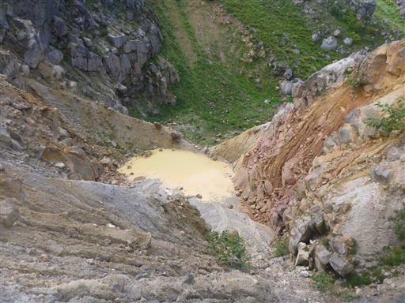
怖い道に見えたが、道はあまり滑りやすくなく、
火口縁から少し離れたところを歩くので安全だ。
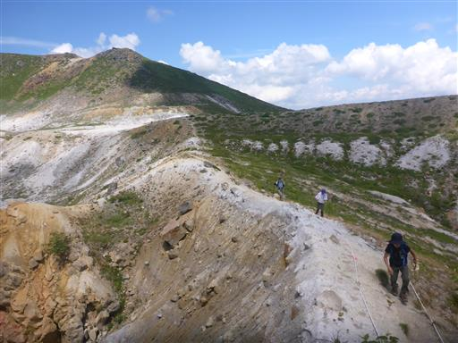
焼山避難小屋が見えてきた。
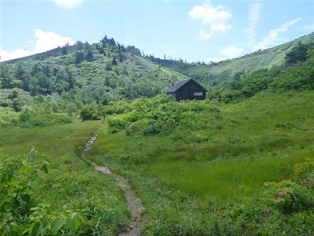
丸太の道。
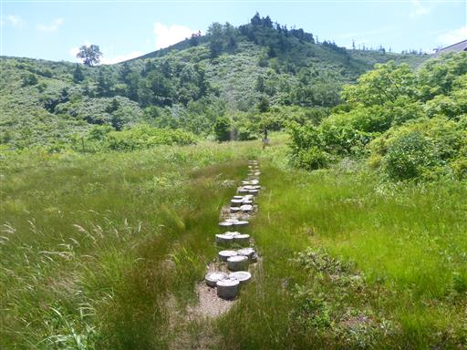
焼山避難小屋に到着。
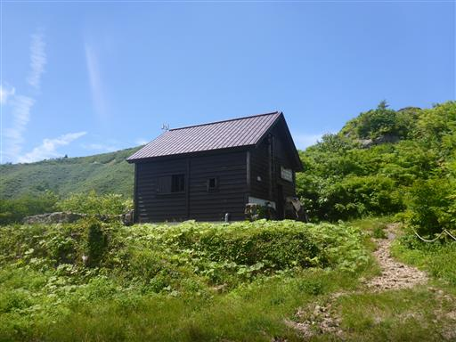
中を覗いてみる。ここで登山者と出会ったため少し会話。
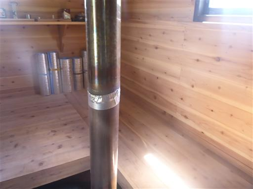
焼山避難小屋を出発。こちらには森の中のきれいな池が見える。
ここも噴火口跡だろうか？この辺りの地形は非常に複雑だ。
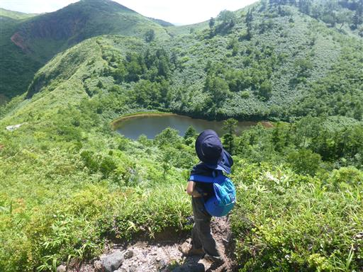
登山道の両側に門のように岩が突き立っている。
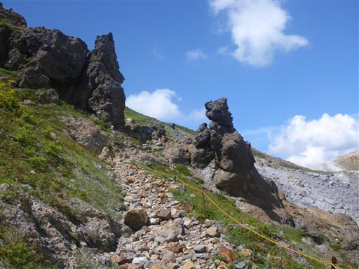
眼下に再び池が現れる。こちらは湯沼。
草津白根山の湯釜と同じような色をしている。
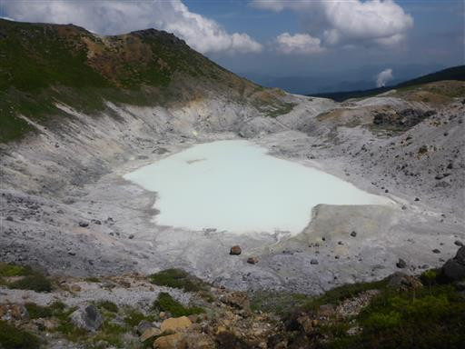
ここからは山頂に向けての登山道になる。
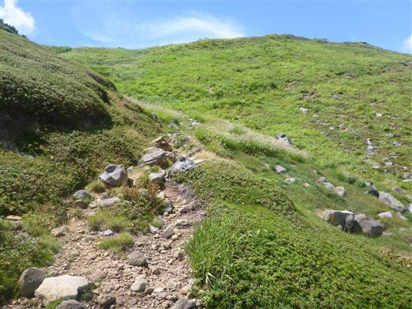
名残峠に到着。
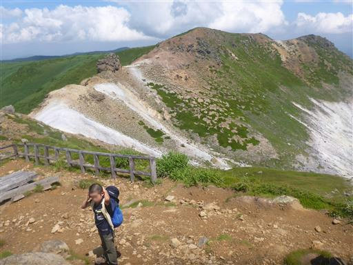
最後の登り。
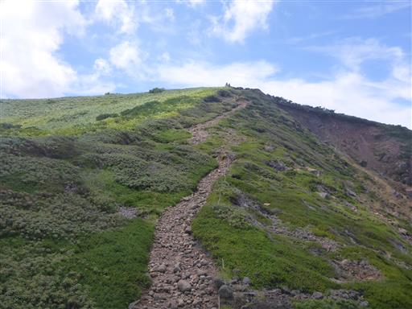
秋田焼山に到着。標高1366m。
背の高い笹に覆われ展望はなく、これまでの風景と比べるとずいぶん地味な山頂だ。
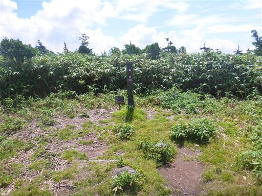
山頂はつまらないので、すぐに下山。
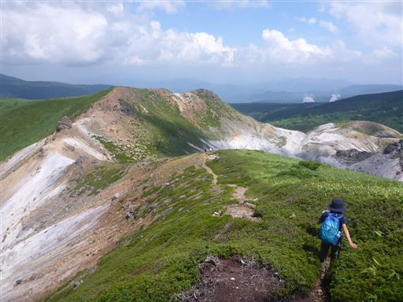
こちらも荒涼とした景色が広がる。あちらこちら火山の影響が見られる。
こちら側の道は、玉川温泉の自然研究路に通じている。
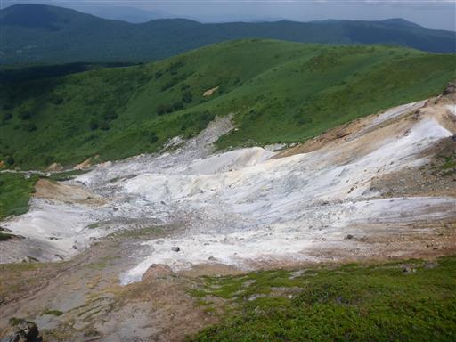
名残峠で昼食をとる。
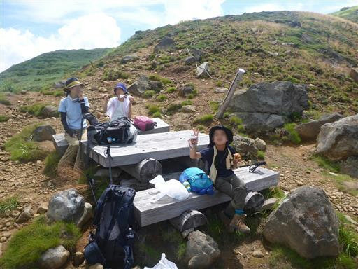
遠くに森吉山が見えている。秋田を代表する山で良く目立つ。
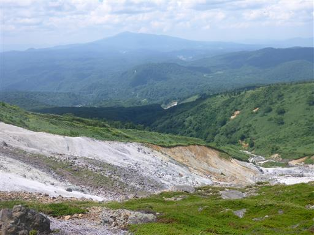
昼食をとったら下山開始。
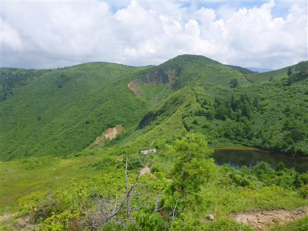
避難小屋からは登りとは別の道を歩く。
こちらの道は山を越えるので、下山中も少し登りがある。
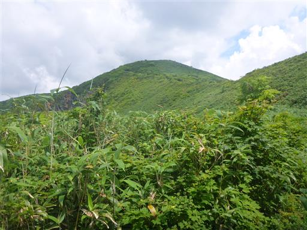
あちらこちらで赤い実が見られるが、何の実だろう？
相変わらず樹木が無く、ハイマツなど高山帯の植物が多い。
標高は低いのだが、火山の影響なのだろうか？

栂森に到着。分岐点から山頂らしき場所まで歩いてみたが、標識も何もない。
振り返って秋田焼山山頂部を望む。
ここから見ると、大きな噴火口と、その真ん中に中央火口丘があることが分かる。
ようやく秋田焼山の全体像を把握することができた。
入道雲が美しい。それほど大きく発達はしていない。
しばらく歩くと樹林帯の中の道になる。
栗のように見えるキノコ。
このまままっすぐ行けるとすぐ車道に出られるのだが、
通行止で登山道はかなり大きく迂回させられる。
熊のイラストが怖い。
下山。駐車場は3台のみしか停まっておらずガラガラだ。
秋田焼山はさほど有名な山ではないのだが、見込んだ通りの素晴らしい山だった。
湯ノ沢や湯沼、空沼など、これまでで一番強く火山を感じられた山だった。
後生掛温泉の日帰り入浴は15時までなので、近くにある八幡平温泉ゆららに行く。
比較的安く、それでいて施設は広々としていて、気持ちの良い温泉だった。
岩手経由で帰るのが早いのだが、娘が道の駅雫石あねっこで
お土産を買いたいと言っているので、遠回りの秋田経由で帰る。
1時間のドライブで、閉店前の16:55にギリギリ到着し、無事購入できた。
キャンプ場への帰り道、岩手山が大きく見える。今日は本当に良い天気だ。
キャンプ場に戻り、ホテルへの道中、湯ノ沢大橋でタヌキの子供？を発見。
夕暮れの景色がきれいだ。
山頂が尖った山は乳頭山。登山口が近くにあるのだが、あの山に行く機会は得られなかった。
夜は再びクワガタ探し。
8日目
本日は撤収日。一週間テントを張った場所は
陽の光を浴びていなかったため、草が白く染まっている。
網張温泉キャンプ場は、アブが少々鬱陶しかったが、
いつもきれいに清掃されており、ゴミをいつでも捨てられるのはありがたかった。
管理人さんは非常に親切で、子供たちも非常に気に入っていた。
幸い朝も来られていたので、お礼を言ってキャンプ場を後にする。
今回の旅行は過去最長、登った4山は全て火山だったが
どの山も個性が全く異なり、変化に富んだ山歩きが楽しめた。
何より天候に恵まれた旅行だった。